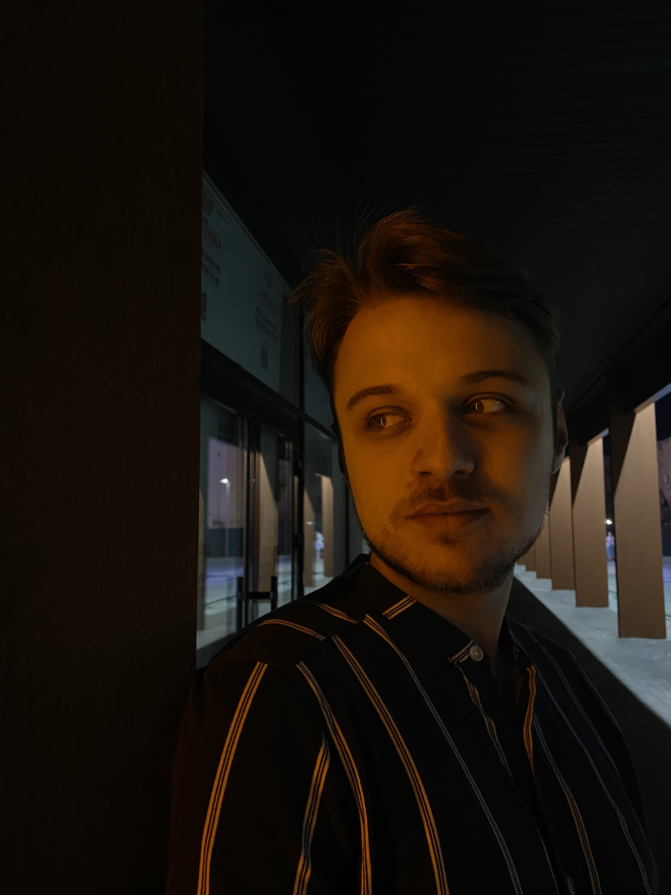
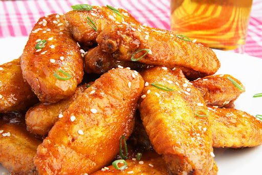

Євгеній Долгополов
Дизайнер, nice guy

Клацни на фото і побачиш більше
Привіт, радий тебе бачити, на цій вебсторінці ти побачиш інформацію про мене.
Лови декілька фактів про мене:
- Моє ДР: 24.09
- Супер творчий
- Обожнюю готувати, займатися спортом та гуляти на природі
Моя темна дизайнерська сторона
Моє портфоліо:
клацни сюди
Досвід:
- 2 роки в академії
- Трішки фрілансу
- Трішки вебінарів
Та от і все...
Мій фірмовий рецепт
Курячі крильця в медовому соусі

- Помити крильця під водою
- Зробити соус: мед + соєвий соус + гірчиця + спеції
- Промаринувати крильця в соусі декілька годин
- Розігріти духовку до 180, запікати десь 40 - 50 хвилин.
- Подавати з овочами та насолоджуватись